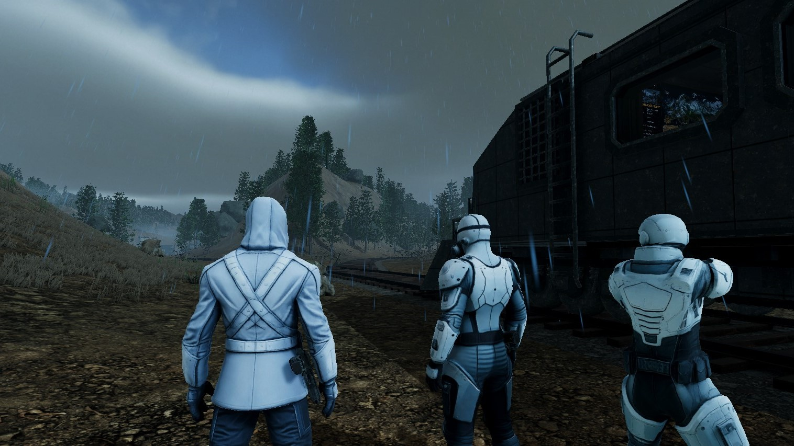

In the current build
What we can show
The screenshots below show our crew characters and train, forest and desert environments, a research compound, and a relay terminal. These are work-in-progress captures; they don't represent a finished game.
PC · Early development
A co-op survival game about a team of scientists travelling by train in search of a cure.
We're still early in development, and the game is a long way from complete. This page is a small look at what we've been working on and where we want to take it.
Browse the screenshots ↓
In the current build
The screenshots below show our crew characters and train, forest and desert environments, a research compound, and a relay terminal. These are work-in-progress captures; they don't represent a finished game.
Planned direction
The idea is for up to four players to use the train as a shared base, head out on missions, and bring back supplies and biological samples to research a cure.
Equipment preparation, recovery objectives, and research aboard the train are part of that plan. There's still a lot to build and test, and the details may change.
From the current build
Seven captures of the environments, characters, and props so far.
Select a frame to take a closer look.
No release date has been set. We'll share more as the project develops.
qubicode.team@gmail.com ↗